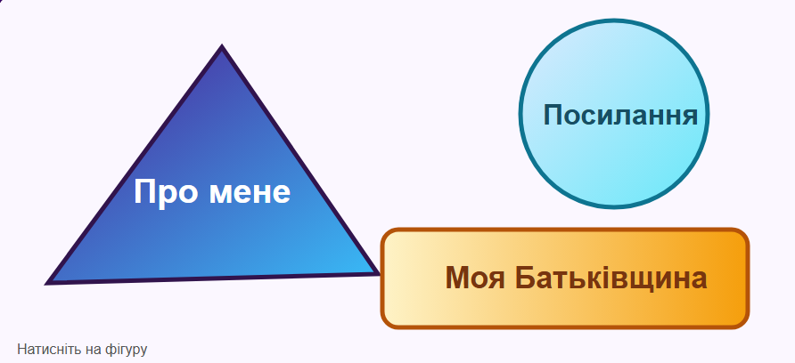

Карта містить три активні області різної форми: багатокутник, коло та прямокутник. Кожна область відкриває відповідний локальний HTML-документ.

Багатокутник «Про мене» веде до домашньої сторінки. Коло «Посилання» відкриває сторінку з гіперпосиланнями. Прямокутник «Моя Батьківщина» відкриває попереднє завдання.